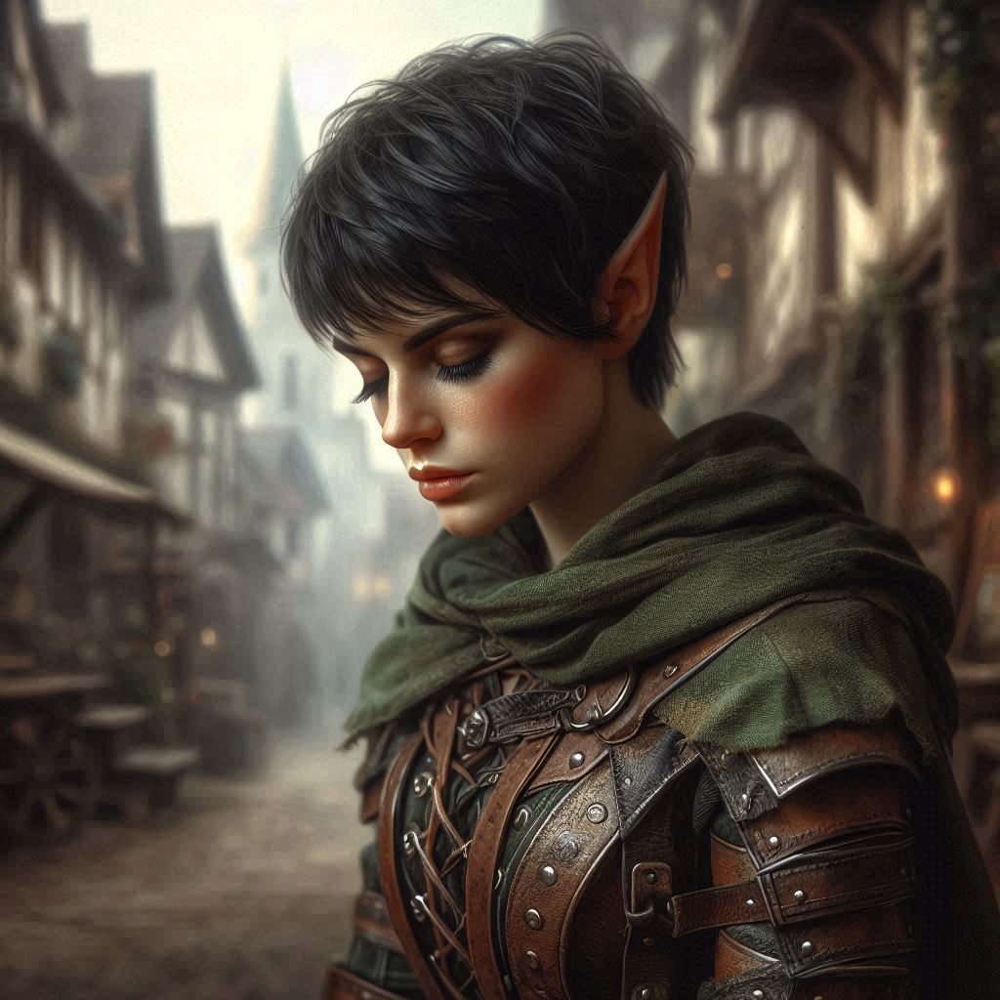

The Attack on Belladonna Township
The wind howls through the village of Belladonna, carrying with it the familiar scent of wood smoke and damp earth. As you approach the smithy, a wave of unease settles in your chest. You’ve seen Baider sharpening his weapons countless times before, but today, something is different. His hulking form stands against the flickering light of the forge, muscles tense, eyes sharper than the blade he holds. He’s sensed the same trouble you’ve uncovered.
The moment you enter, Baider glances up. “Kira,” he grumbles, lowering his weapon. “Trouble is in the wind. I hoped you would return soon.”
You waste no time. The words spill from your mouth in a rush—about Varis, the dark elf prince masquerading as the Trade Minister, about his plans to summon dark forces from the Realm of Shadows, and about how Onyx and Baider are targets for sacrifice in a twisted ritual.
Baider listens in silence, his brow furrowing deeper with each word. When you finish, his grip tightens on his weapon. “I always knew Varis was a snake,” he mutters. “But this… dark magic? Sacrifices? This is bigger than we thought. I have a feeling Onyx will know something of this.”
You nod, your heart pounding. For a brief moment, the weight of it all feels too heavy, too much to carry. But you can’t falter now. You’ve already set this chain of events in motion.
“We have to protect Onyx,” you say. “If Varis gets his hands on him, there’s no telling what he’ll unleash.”
Baider grunts in agreement, but before either of you can move, a sharp sound pierces the air—a scream from the village square. You spin around, instinctively reaching for your bow.

Outside, chaos erupts. Shadows dart between houses as armed mercenaries pour into the village. They’re here, just as you feared, and they’re coming for Onyx and Baider.
You lock eyes with Baider, both of you knowing what’s at stake. Without a word, the two of you sprint into the fray.
The clash of steel echoes through the square as you draw your bow and release arrows with practiced precision. One mercenary falls, then another, but they keep coming, relentlessly. Baider fights beside you, his massive warhammer crushing anyone who dares approach. He’s a force of nature, but even he can’t hold them off forever.
Amidst the chaos, you catch a glimpse of Onyx—his weathered face grim as he fends off two attackers. But it’s no use. They overwhelm him, binding his hands and dragging him toward the edge of the village.
“No!” The word rips from your throat as you surge forward, heart hammering. You won’t let them take him. Not Onyx.
But as you draw closer, a sharp pain sears across your side—a mercenary’s blade, catching you off guard. You stumble, blood soaking through your cloak. Baider roars, smashing the assailant aside, but it’s too late.
In the confusion, the mercenaries haul Onyx away, disappearing into the forest. They’ve got him.
Baider turns to you, his face twisted with fury and concern. “Kira! You’re hurt!” His hands are gentle as he pulls you to your feet, but there’s a hardness in his eyes—a fear he rarely shows.
“I’m fine,” you say through gritted teeth, though the pain lingers. “We need to go after them. We can’t let them—”
“Kira.” Baider cuts you off, his voice low and rough. “This isn’t your fault.”
But it is. You acted alone, kept secrets, and now Onyx has paid the price. The weight of your decisions presses down on you like a heavy cloak. You thought you could handle this on your own, but now your choices have put the people you care about in danger. Guilt gnaws at you, but there’s no time for regret.
Baider grips your shoulder, his gaze softening. “We’ll get him back, kid. But we need to be smart about this. No rushing in half-cocked.”
You nod, fighting back the tears threatening to spill. You can’t afford to break down now. Onyx is still out there, and Varis is moving closer to his twisted goal. You need to act—and fast.